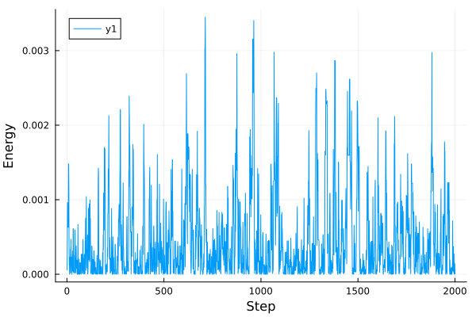
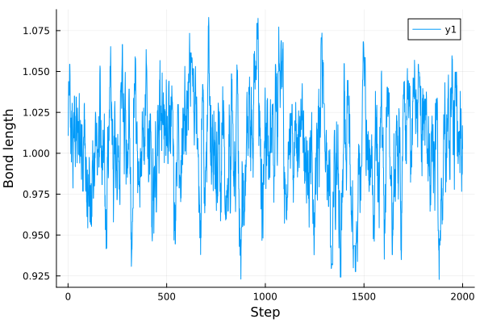

Thermal Metropolis-Hastings Monte Carlo
Metropolis-Hastings Monte Carlo is a popular method for sampling the canonical distribution for a molecular system. Our implementations uses AdvancedMH.jl from the Turing organisation.
For a classical Simulation, the algorithm involves proposing new configurations in a random walk starting from an initial configuration. These are accepted or rejected based upon the Metropolis-Hastings criteria. The result is a Markov chain that samples the canonical distribution.
Example
We can perform the sampling by setting up a classical simulation in the usual way and providing an appropriate initial configuration.
using NQCDynamics
sim = Simulation(Atoms([:H, :H, :H, :H, :H]), Harmonic(); temperature=15)
r0 = zeros(size(sim))1×5 Matrix{Float64}:
0.0 0.0 0.0 0.0 0.0Then we must also specify the total number of steps and the size of each step. These can be provided in a dictionary for each species to allow for different step sizes depending on the element in the simulation.
steps = 1e4
step_size = Dict(:H=>1)Dict{Symbol, Int64} with 1 entry:
:H => 1Now we can run the sampling. The extra keyword argument move_ratio is used to specify the fraction of the system moved during each Monte Carlo step. If we attempt to move the entire system at once, we can expect a very low acceptance ratio, whereas is we move only a single atom, the sampling will take much longer. You will likely have to experiment with this parameter to achieve optimal sampling.
using NQCDynamics.InitialConditions: ThermalMonteCarlo
chain = ThermalMonteCarlo.run_advancedmh_sampling(sim, r0, steps, step_size; move_ratio=0.5)10000-element Vector{Matrix{Float64}}:
[0.0 0.29582679506115955 … 0.7747243395809045 0.0]
[0.0 0.29582679506115955 … 0.7747243395809045 0.0]
[0.0 1.3411983683940831 … 0.7747243395809045 1.7784384572921648]
[-1.4628774936036133 -0.7524344594687542 … 0.9688274696973229 0.9104673969365062]
[-1.4628774936036133 -1.7015287999520283 … 0.9688274696973229 0.6851809762945672]
[-1.7172098847086503 -2.286573066303424 … 0.9688274696973229 0.9638186172418279]
[-1.7172098847086503 -2.286573066303424 … 1.7650574394462013 0.9638186172418279]
[-1.7172098847086503 -4.319348187591395 … 0.4880269597665481 0.9638186172418279]
[-1.7172098847086503 -3.6901542603107176 … 0.4880269597665481 0.024708843737814568]
[-1.2788676429566728 -3.6901542603107176 … 0.4880269597665481 0.024708843737814568]
⋮
[-1.8165445360390562 1.3216663287018635 … -0.2766404484495876 1.333739720672209]
[-1.8165445360390562 1.3216663287018635 … -0.4208242714283019 1.333739720672209]
[-0.17195005710547573 2.6528657023903373 … -0.4208242714283019 2.5270303217889687]
[-0.09767206669897804 3.1184827320074096 … -1.2571960599288665 1.7451632569329116]
[-0.09767206669897804 3.1184827320074096 … -0.8148036332154538 1.9048564338123013]
[-0.09767206669897804 3.1184827320074096 … -0.8148036332154538 1.9048564338123013]
[-0.09767206669897804 3.1184827320074096 … -0.8148036332154538 1.9048564338123013]
[-0.38226310650632495 3.251985255843662 … -0.8148036332154538 4.054111652924025]
[-0.38226310650632495 3.251985255843662 … 0.23931681545005756 4.054111652924025]Now that our sampling is complete we can evaluate the potential energy expectation value. Here we use the @estimate macro which will evaluate the given function for every configuration inside chain and return the average. Here we can see that the energy we obtain closely matches that predicted by the equipartition theorem.
julia> Estimators.@estimate potential_energy(sim, chain)39.05437554098823julia> sim.temperature / 2 * 537.5
Legacy version
Prior to the use of AdvancedMH.jl, an alternative version of the algorithm was implemented that works for both classical and ring polymer systems. This is currently still included in the code but should be regarded as deprecated and will likely be removed/combined with the AdvancedMH.jl version.
Here, we use the legacy version to obtain a thermal distribution in a simple model system.
First we set up the system in the usual way, here we're using an NO molecule with a harmonic interaction between the atoms. Notice that we use Unitful.jl to specify the temperature.
using Unitful
atoms = Atoms([:N, :O])
model = DiatomicHarmonic(1.0)
sim = Simulation{Classical}(atoms, model; temperature=300u"K")Then we have to specify the parameters for the Monte Carlo simulation and perform the sampling. Δ contains the step sizes for each of the species, R0 the initial geometry and passes the number of monte carlo passes we perform (passes*n_atoms steps total).
Δ = Dict([(:N, 0.1), (:O, 0.1)])
R0 = [1.0 0.0; 0.0 0.0; 0.0 0.0]
passes = 1000
output = InitialConditions.MetropolisHastings.run_monte_carlo_sampling(sim, R0, Δ, passes)Output has three fields: the acceptance rates for each species and the energies and geometries obtained during sampling.
julia> output.acceptanceDict{Symbol, Float64} with 2 entries: :N => 0.830392 :O => 0.833673
plot(output.energy)
We can calculate the distance between each atom and plot the bond length throughout the sampling.
using LinearAlgebra
plot([norm(R[:,1] .- R[:,2]) for R in output.R])
The result of this simulation seamlessly interfaces with the DynamicalDistribution presented in the previous section and output.R can be readily passed to provide the position distribution. The Monte Carlo sampling does not include velocities but these can be readily obtained from the Maxwell-Boltzmann distribution.